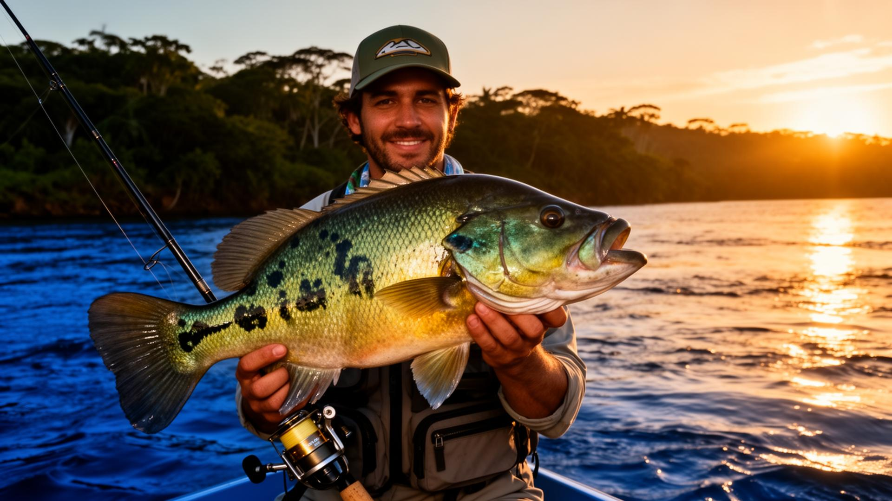
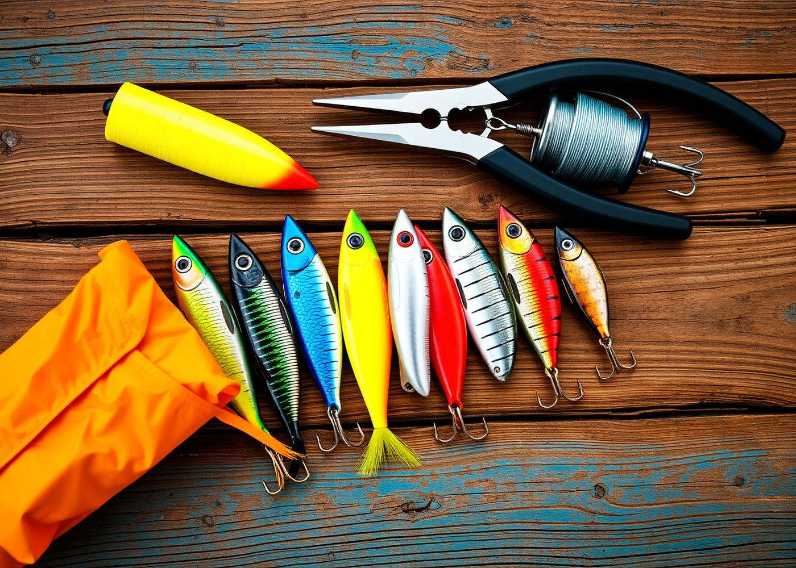
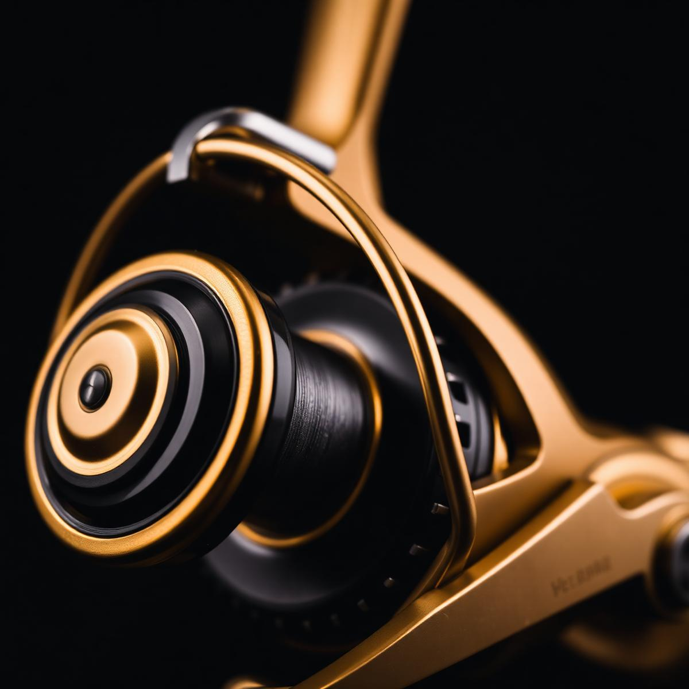

01
Sorteio todo dia
Não precisa esperar o mês virar. Tem rifa rolando todo santo dia — entrou no grupo, já pode concorrer.

Entre no grupo de rifas premium e acompanhe pescarias, dicas e bastidores no canal. Prêmios Abu Garcia, Daiwa, Shimano e Marine com entrega garantida.
Prêmios nas rifas

Canal Irmãos da Pesca
O canal aproxima a turma das rifas: tem pescaria, equipamento em ação, sorteios e bastidores para quem gosta de acompanhar antes de entrar no grupo.
Por que a irmandade?
Não precisa esperar o mês virar. Tem rifa rolando todo santo dia — entrou no grupo, já pode concorrer.
Carretilhas, molinetes e equipamentos das marcas que pescador sério respeita: Abu Garcia, Daiwa, Shimano, Marine.
Ganhou? Recebeu. Sem enrolação, sem desculpa. Despachamos pra todo Brasil com nota e rastreio.

Sobre nós
Nossa equipe é apaixonada por pesca e é o coração dos Irmãos da Pesca. Trabalhamos todo dia pra entregar a melhor experiência aos nossos participantes — em cada rifa, com prêmios das marcas mais cobiçadas do segmento.
Além das rifas, acreditamos em retribuir à comunidade pescadora: compartilhamos conteúdo no nosso canal do YouTube e construímos uma turma onde a confiança vem antes do anzol.
Nossa visão é ser referência em rifa de pesca premium no Brasil — o grupo onde o pescador sério encontra a tralha que cobiça, com transparência, seriedade e atendimento humano.
Bora pescar junto
Chama no WhatsApp, entra no grupo e já fica de olho na próxima rifa. Atendimento humano, de pescador pra pescador.